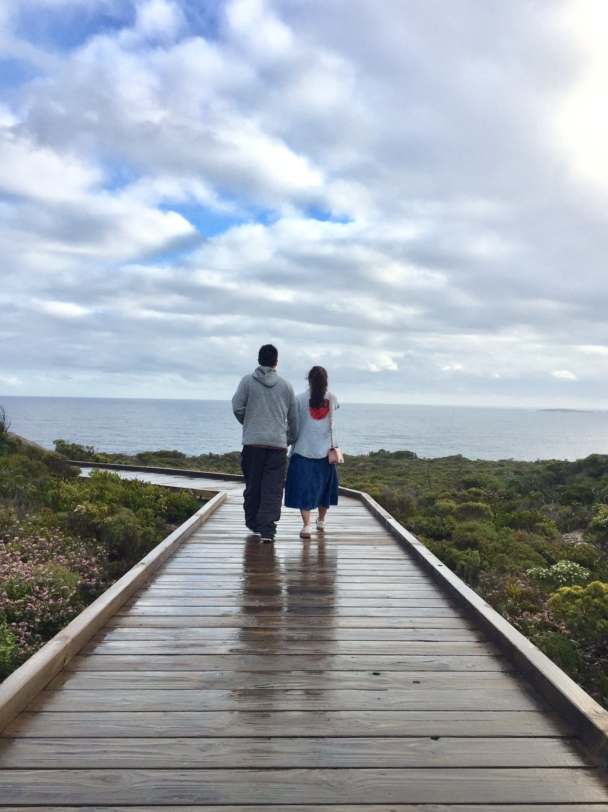

我们过的第一个年，湖南老家，那是我们还很瘦，笑的很美，还不会吵架，想想当时真好，能一直那样就好了~
泰国，海滩边，你照下我亲你的瞬间，夕阳下影子被拉长~
巴厘岛的海豚，你精心挑选的唯一一个一日游，下着小雨，冻傻了，但还是很美~
初秋，去坝上草原的路上，刚出北京的一条小河旁，月色真美~
婚礼现场，看到了光鲜的我们，但是筹备婚礼有多累只有我们知道
一起去ColdPlay演唱会，别的我不记得，只记得我后来生气了><
塔洲威灵顿山顶，感觉全岛都能看到的地方~
那天晚上画了N遍才画好的
说走就走，误打误撞的跑到了小房子海滩，喜欢这种沿着路找风景的感觉~

以后的路，还要一起走下去，希望我们能过的开开心心的，两周年快乐~